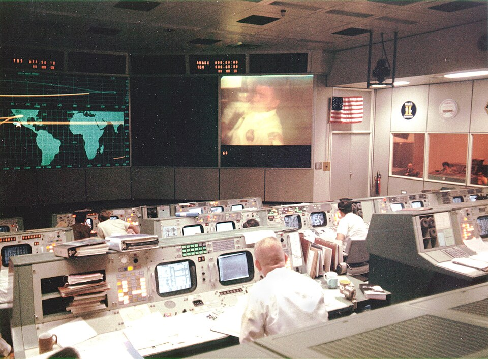

Una explosión hiere al Apollo 13 y tres hombres luchan por regresar
Un tanque de oxígeno del módulo de servicio reventó a unos trescientos mil kilómetros de la Tierra. El alunizaje quedó cancelado: la única misión es ahora traer vivos a Lovell, Swigert y Haise, refugiados en el módulo lunar como en un bote salvavidas. A esta hora nadie puede asegurar el desenlace.

La frase llegó del cielo con una calma que eriza la piel: «Houston, hemos tenido un problema». Era de noche en esta ciudad cuando una sacudida estremeció a la nave Apollo 13, que volaba rumbo a la Luna a unos trescientos mil kilómetros de la Tierra. Un tanque de oxígeno del módulo de servicio reventó; los instrumentos comenzaron a marcar caídas de presión y de energía, y el comandante Lovell, asomado a la ventanilla, informó que veía escapar un gas hacia el espacio: era el oxígeno de su propia nave, desangrándose en el vacío como una herida que no cierra.
A bordo van tres hombres: James Lovell, veterano de tres vuelos espaciales, que iba a pisar la Luna en esta misión; John Swigert, sumado a la tripulación en vísperas de la partida en reemplazo de un compañero expuesto a un contagio; y Fred Haise. El alunizaje en las alturas de Fra Mauro, objetivo del viaje, quedó cancelado en cuestión de minutos y sin lamentos: la misión es ahora una sola, traerlos vivos. El módulo de mando, sin energía ni aire suficientes, fue apagado casi por completo para guardar sus últimas reservas para la hora del regreso, si el regreso llega.
El plan trazado en las últimas horas tiene la audacia de lo improvisado y la lógica de lo desesperado. Los tres hombres se han refugiado en el módulo lunar Aquarius, concebido para posarse en la Luna con dos tripulantes durante dos días, y deberán usarlo como bote salvavidas para tres durante el doble de tiempo. No hay regreso directo posible: la nave deberá seguir su curso, rodear la Luna y aprovechar su impulso para enfilar hacia la Tierra. Habrá que racionarlo todo: el agua, el oxígeno, la energía eléctrica, hasta el abrigo, porque la nave apagada se enfría como una casa sin fuego.
En el Centro de Vuelos Tripulados de esta ciudad nadie dormirá esta noche. Cientos de ingenieros y técnicos llenan salas y pasillos, muchos llamados de urgencia desde sus casas, probando en los simuladores cada maniobra antes de dictarla a la nave, calculando cuánta agua, cuánto aire y cuánta batería quedan para cada hora que falta. Las familias de los tripulantes siguen la emergencia acompañadas por otros astronautas; los diarios del mundo rehacen sus primeras planas. Cuentan que en el control de la misión las voces de los tres hombres se oyen serenas, ocupadas en números, como si el pánico fuera un lujo que no cabe a bordo.
Escribimos esta crónica sin conocer su final, y pocas veces la tinta pesó tanto. Los técnicos hablan con prudencia: si los consumos aguantan, si los motores del Aquarius responden, si el frío no vence antes a los hombres ni a las máquinas, la nave podría amerizar en el Pacífico dentro de unos cuatro días. Son muchos condicionales para tres vidas. Esta noche, la Luna que los hombres miraron durante milenios como reloj y como lámpara es apenas el recodo de un camino de vuelta. El mundo entero contiene el aliento, pendiente de un hilo de radio tendido en el vacío.